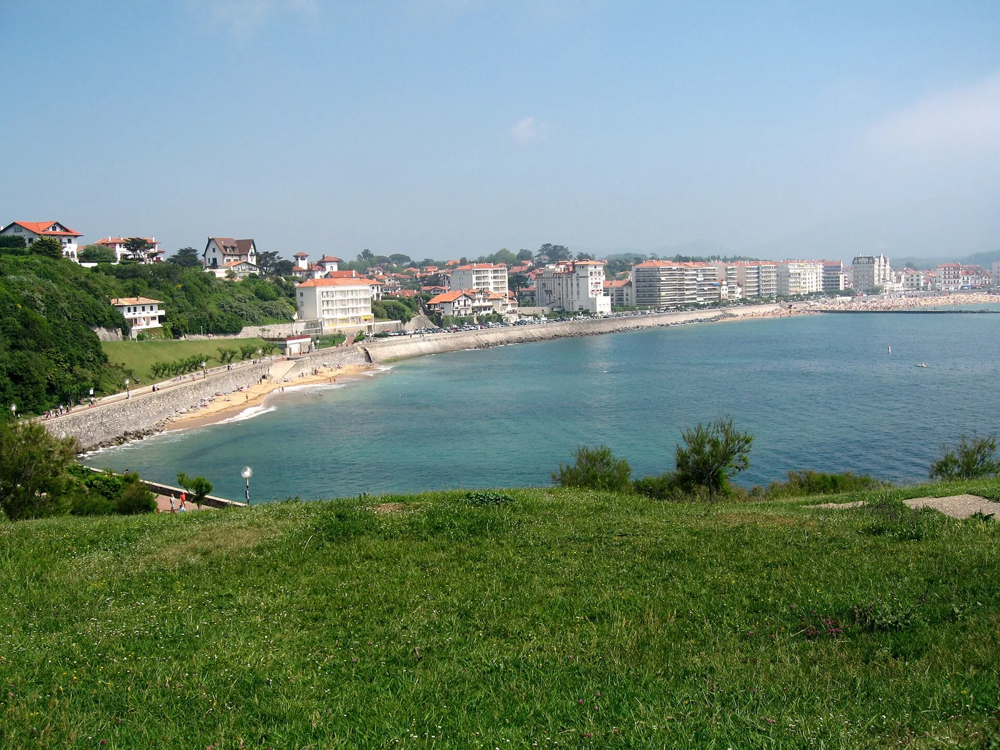

Saint-Jean-de-Luz — Grande Plage
Pays basque, France · paddle, baignade

Une plage urbaine au cœur du Pays basque, bordée de maisons et de promenades. La Grande Plage donne sur la baie de Saint-Jean-de-Luz, entre les digues et le port.
- Lieu
- Pays basque, France
- Niveau
- Variable selon les conditions
- Activités
- paddle, baignade
- Type d'eau
- Mer / océan
- Coordonnées
- 43.39, -1.67 (position approximative du secteur)
Ouvrir dans Ocean Buddy Télécharger sur l'App Store
Source : Wikipédia · géographie du lieu.